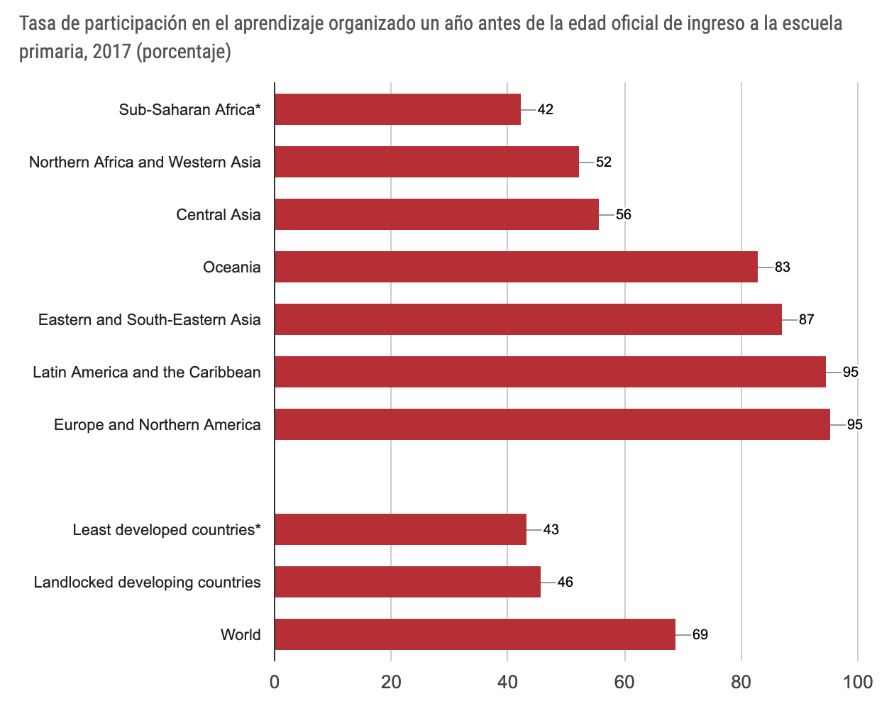
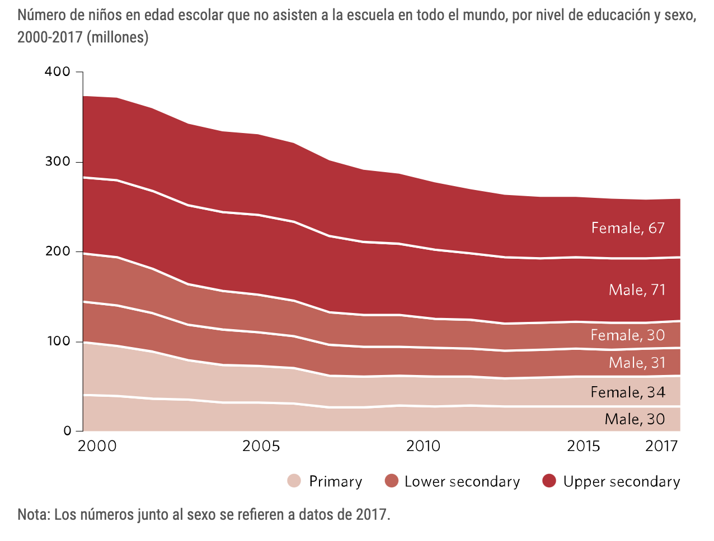
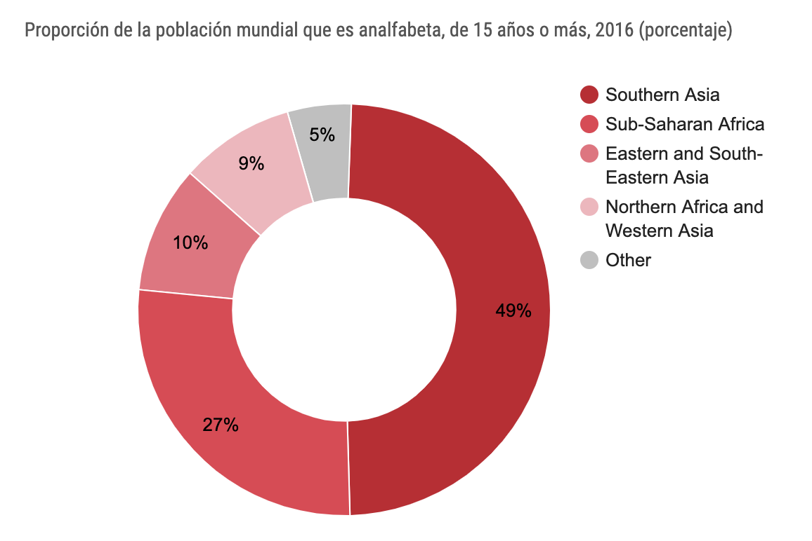
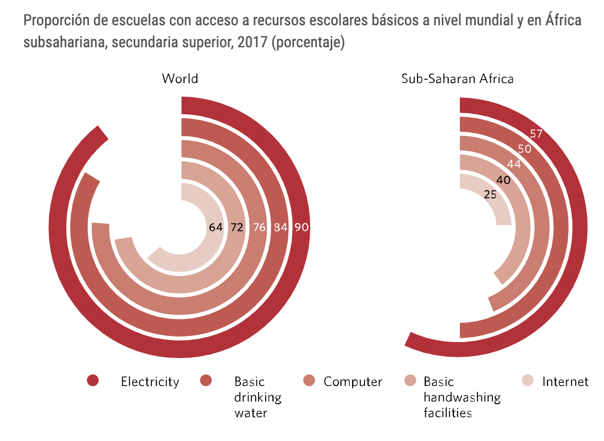

Internacional
Es necesario volver a centrar los esfuerzos para mejorar la calidad de la educación. Las desigualdades educativas en cuanto a género, ubicación urbana y rural y otras dimensiones todavía son profundas, haciendo necesarias más inversiones en infraestructura educativa, especialmente en los países menos adelantados.
-

- Mundialmente la tasa de participación en educación preescolar fue de 70% en 2016, mostrando un aumento desde el 63% de 2010. Las tasas más bajas se encuentran en África subsahariana (42%) y en África septentrional y Asia occidental (52%).
- La matriculación en la enseñanza primaria en los países en desarrollo ha alcanzado el 91%, pero 57 millones de niños en edad de escolarización primaria siguen sin asistir a la escuela.
- Se estima que en todo el mundo 617 millones de niños y adolescentes en edad de enseñanza primaria y secundaria inferior, el 58% de ese grupo no logran los niveles mínimos de competencia en lectura y matemáticas.
- Se estima que en 2017 se capacitó al 85% de los docentes de la escuela primaria del mundo. África subsahariana tenía los porcentajes más bajos de docentes cualificados en enseñanza preescolar (48%), primaria (64%) y secundaria (50%).
- Se estima que el 50% de los niños que no asisten a la escuela primaria viven en zonas afectadas por conflictos.
- En el año 2017 todavía había 262 millones de niños y adolescentes que no asistían a la escuela.
- 617 millones de jóvenes en el mundo carecen de los conocimientos básicos en aritmética y de un nivel mínimo de alfabetización.
- De todas las regiones, África subsahariana es la que se enfrenta a los mayores desafíos en cuanto a proporcionar recursos básicos a las escuelas. En los niveles primario y secundario inferior, menos de la mitad de las escuelas tienen acceso a agua potable, energía eléctrica, ordenadores e Internet. En el nivel secundario superior, el 57% de las escuelas tienen energía eléctrica, pero sólo entre el 25% y el 50% tienen acceso a Internet, ordenadores, agua potable e instalaciones para lavarse las manos.



A pesar del progreso, 750 millones de adultos todavía no pueden leer ni escribir una simple oración; dos terceras partes de esos adultos son mujeres. Como aspecto más positivo, las tasas de alfabetización de los jóvenes suelen ser más altas que las de los adultos. Esto refleja un mayor acceso a la escolarización entre las generaciones más jóvenes, aunque muchos estudiantes con aptitudes básicas de lectura y escritura todavía tienen dificultades para alcanzar el nivel más alto de competencia mínima en lectura y matemáticas.